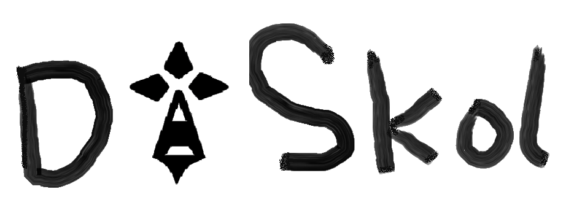

<mat-toolbar>
	<!-- à gauche -->
	<div class="gauche">
		<button #orientation class="text" (click)="openOverlay()" mat-raised-button>Orientations</button>
		<div class="divOverlays" *ngIf="showOverlay">
			<button [style.width.px]="orientation.offsetWidth" class="text overlay" (click)="goto('/ecoles?type=BUT')"
				mat-raised-button>BUT</button>
			<button [style.width.px]="orientation.offsetWidth" class="text overlay" (click)="goto('/ecoles?type=BTS')"
				mat-raised-button>BTS</button>
			<button [style.width.px]="orientation.offsetWidth" class="text overlay"
				(click)="goto('/ecoles?type=Universités')" mat-raised-button>Universités</button>
			<button [style.width.px]="orientation.offsetWidth" class="text overlay"
				(click)="goto('/ecoles?type=Écoles')" mat-raised-button>Écoles</button>
		</div>
		<app-searchbar></app-searchbar>
	</div>


	<!-- au centre -->
	<div class="centre" (click)="goto('/')">
		
	</div>

	<!-- à droite -->
	<div class="droite" (click)="goto('/login')">
		
		<button class="text" mat-raised-button>Connexion</button>
	</div>

</mat-toolbar>